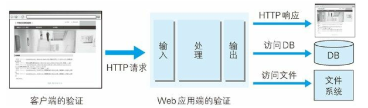

因输出值转义不完全引发的安全漏洞
2019-02-28 @wsl
实施 Web 应用的安全对策可大致分为以下两部分。
- 客户端的验证
- Web 应用端（服务器端） 的验证
- 输入值验证
- 输出值转义

多数情况下采用 JavaScript 在客户端验证数据。可是在客户端允许篡改数据或关闭 JavaScript，不适合将 JavaScript 验证作为安全的防范对策。保留客户端验证只是为了尽早地辨识输入错误，起到提高 UI 体验的作用。
Web 应用端的输入值验证按 Web 应用内的处理则有可能被误认为是具有攻击性意义的代码。输入值验证通常是指检查是否是符合系统业务逻辑的数值或检查字符编码等预防对策。
从数据库或文件系统、HTML、邮件等输出 Web 应用处理的数据之际，针对输出做值转义处理是一项至关重要的安全策略。当输出值转义不完全时，会因触发攻击者传入的攻击代码，而给输出对象带来损 害。
1. 跨站脚本攻击
跨站脚本攻击（Cross-Site Scripting，XSS）是指通过存在安全漏洞的Web 网站注册用户的浏览器内运行非法的 HTML标签或 JavaScript 进行的一种攻击。动态创建的 HTML部分有可能隐藏着安全漏洞。就 这样，攻击者编写脚本设下陷阱，用户在自己的浏览器上运行时，一不小心就会受到被动攻击。
跨站脚本攻击有可能造成以下影响：
- 利用虚假输入表单骗取用户个人信息。
- 利用脚本窃取用户的 Cookie 值， 被害者在不知情的情况下，帮助攻击者发送恶意请求。
- 显示伪造的文章或图片。
XSS 是攻击者利用预先设置的陷阱触发的被动攻击。
跨站脚本攻击属于被动攻击模式，因此攻击者会事先布置好用于攻击的陷阱。
2. SQL 注入攻击
会执行非法 SQL 的 SQL 注入攻击
SQL注入（SQL Injection）是指针对 Web 应用使用的数据库，通过运行非法的 SQL而产生的攻击。 该安全隐患有可能引发极大的威胁，有时会直接导致个人信息及机密信息的泄露。
Web 应用通常都会用到数据库，当需要对数据库表内的数据进行检索或添加、删除等操作时，会使用 SQL语句连接数据库进行特定的操作。如果在调用 SQL语句的方式上存在疏漏，就有可能执行被恶意注入（Injection）非法 SQL语句。
SQL注入攻击有可能会造成以下等影响。
- 非法查看或篡改数据库内的数据
- 规避认证
- 执行和数据库服务器业务关联的程序等
何为 SQL
SQL是用来操作关系型数据库管理系统（Relational DataBase Management System， RDBMS） 的数据库语言，可进行操作数据或定义数据等。RDBMS 中有名的数据库有 Oracle Database、Microsoft SQL Server、IBM DB2、MySQL和 PostgreSQL等。这些数据库系统都可以把 SQL作为数据库语言使用。
3. OS 命令注入攻击
OS 命令注入攻击（OS Command Injection）是指通过 Web 应用，执行非法的操作系统命令达到攻击的目的。只要在能调用 Shell 函数的地方就有存在被攻击的风险。
可以从 Web 应用中通过 Shell 来调用操作系统命令。倘若调用 Shell 时存在疏漏，就可以执行插入的非法 OS 命令。
OS 命令注入攻击可以向 Shell 发送命令，让 Windows 或 Linux 操作系统的命令行启动程序。也就是说，通过 OS 注入攻击可执行 OS 上安装着的各种程序。
4. HTTP 首部注入攻击
HTTP 首部注入攻击（HTTP Header Injection）是指攻击者通过在响应首部字段内插入换行，添加任意响应首部或主体的一种攻击。 属于被动攻击模式。
向首部主体内添加内容的攻击称为 HTTP 响应截断攻击（HTTP Response Splitting Attack）。
HTTP首部注入攻击
Web 应用有时会把从外部接收到的数值，赋给响应首部字段 Location 和 Set-Cookie。
HTTP 首部注入可能像这样，通过在某些响应首部字段需要处理输出值的地方，插入换行发动攻击。
HTTP 首部注入攻击有可能会造成以下一些影响。
- 设置任何 Cookie 信息
- 重定向至任意 URL
- 显示任意的主体（HTTP 响应截断攻击）
HTTP 响应截断攻击
HTTP 响应截断攻击是用在 HTTP 首部注入的一种攻击。攻击顺序相同，但是要将两个 %0D%0A%0D%0A 并排插入字符串后发送。利用这两个连续的换行就可作出 HTTP 首部与主体分隔所需的空行了，这样就能显示伪造的主体，达到攻击目的。这样的攻击叫做 HTTP 响应截断攻击。
利用这个攻击，已触发陷阱的用户浏览器会显示伪造的 Web 页面，再让用户输入自己的个人信息等，可达到和跨站脚本攻击相同的效果。
另外，滥用 HTTP/1.1 中汇集多响应返回功能，会导致缓存服务器对任意内容进行缓存操作。这种攻击称为缓存污染。使用该缓存服务器的用户，在浏览遭受攻击的网站时，会不断地浏览被替换掉的 Web 网页。
5. 邮件首部注入攻击
邮件首部注入（Mail Header Injection）是指 Web 应用中的邮件发送功能，攻击者通过向邮件首部 To 或 Subject 内任意添加非法内容发起的攻击。利用存在安全漏洞的 Web 网站，可对任意邮件地址发送广告邮件或病毒邮件。
6. 目录遍历攻击
目录遍历（Directory Traversal）攻击是指对本无意公开的文件目录，通过非法截断其目录路径后，达成访问目的的一种攻击。 这种攻击有时也称为路径遍历（Path Traversal）攻击。
通过 Web 应用对文件处理操作时，在由外部指定文件名的处理存在疏漏的情况下，用户可使用 .../ 等相对路径定位到 /etc/passed 等绝对路径上，因此服务器上任意的文件或文件目录皆有可能被访问到。这 样一来，就有可能非法浏览、篡改或删除 Web 服务器上的文件。
固然存在输出值转义的问题，但更应该关闭指定对任意文件名的访问权限。
7. 远程文件包含漏洞
远程文件包含漏洞（Remote File Inclusion）是指当部分脚本内容需要从其他文件读入时，攻击者利用指定外部服务器的 URL充当依赖文件，让脚本读取之后，就可运行任意脚本的一种攻击。
这主要是 PHP 存在的安全漏洞，对 PHP 的 include 或 require 来说，这是一种可通过设定，指定外部服务器的 URL作为文件名的功能。但是，该功能太危险，PHP5.2.0 之后默认设定此功能无效。
固然存在输出值转义的问题， 但更应控制对任意文件名的指定。